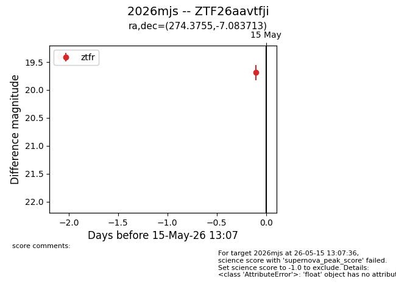
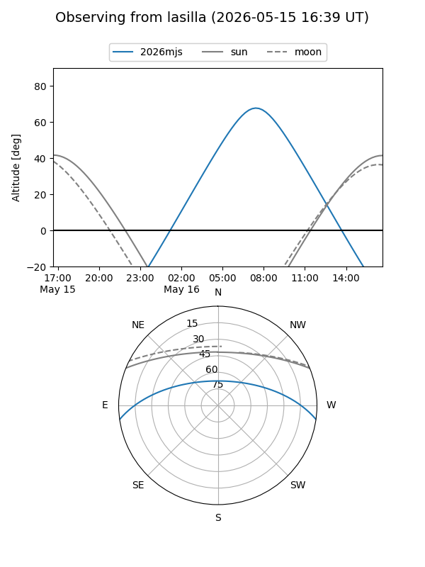
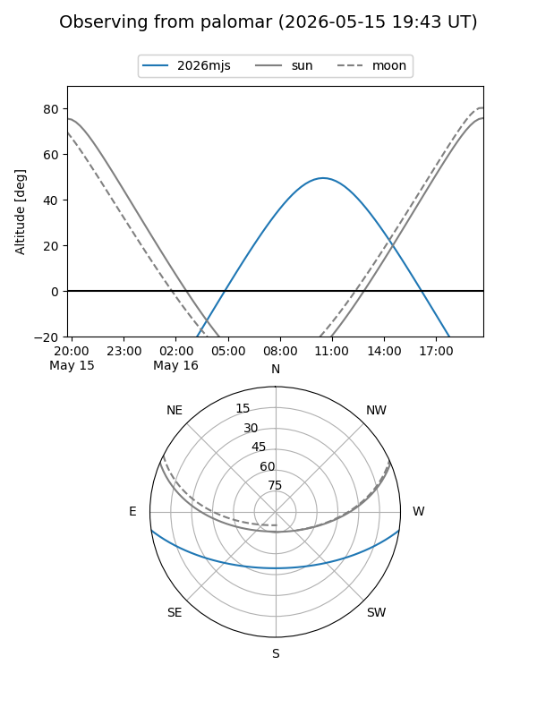
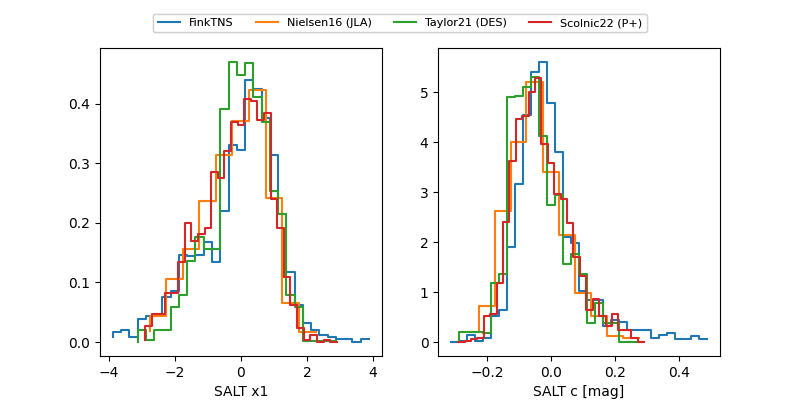

2026mjs
Target 2026mjs at 2026-05-15 13:09
Aliases and brokers:
FINK: link
Lasair: link
ALeRCE: link
TNS: link
YSE: link
alt names
ZTF26aavtfji (ztf,fink_ztf)
2026mjs (tns,yse)
Coordinates:
equatorial (ra, dec) = 274.3755,-7.08371
equatorial (HMS+DMS) = 18:17:30.13,-07:05:01.37
galactic (l, b) = (22.7370,+4.24768)
Flags:
Photometry:
last ztfr=19.69
2 ztfr detections
Lightcurve

Visibility


Additional plots
